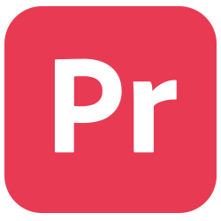
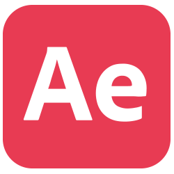
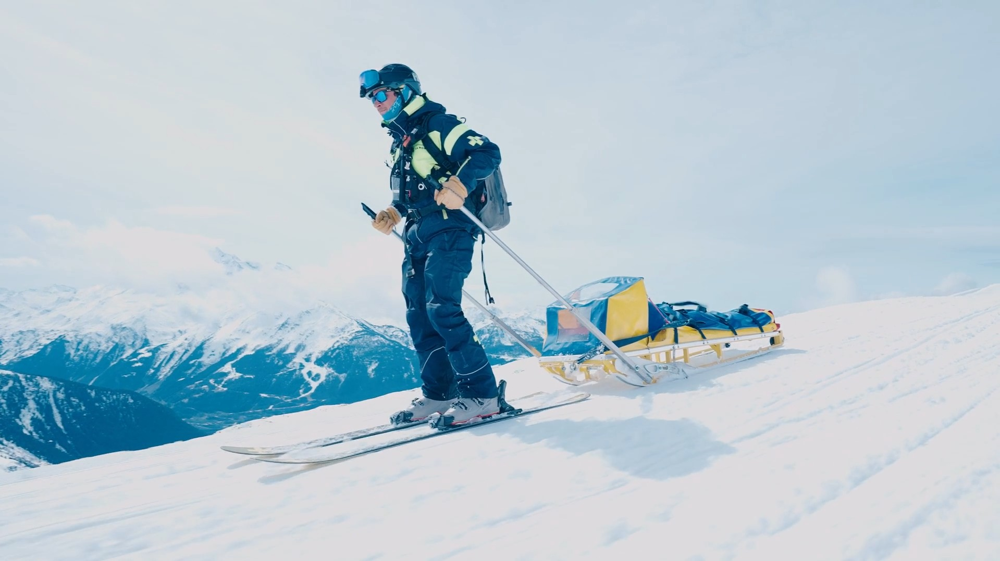
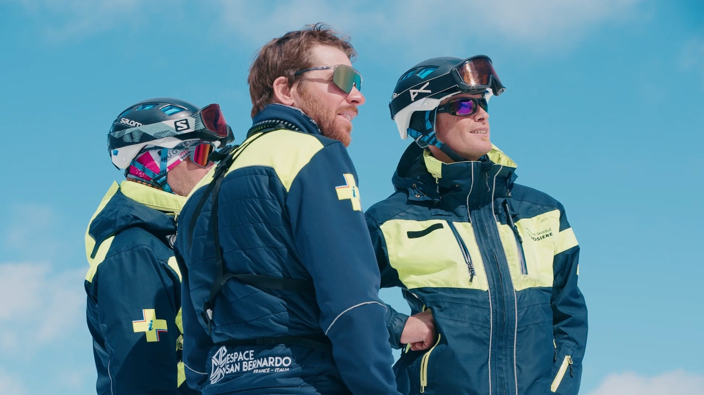
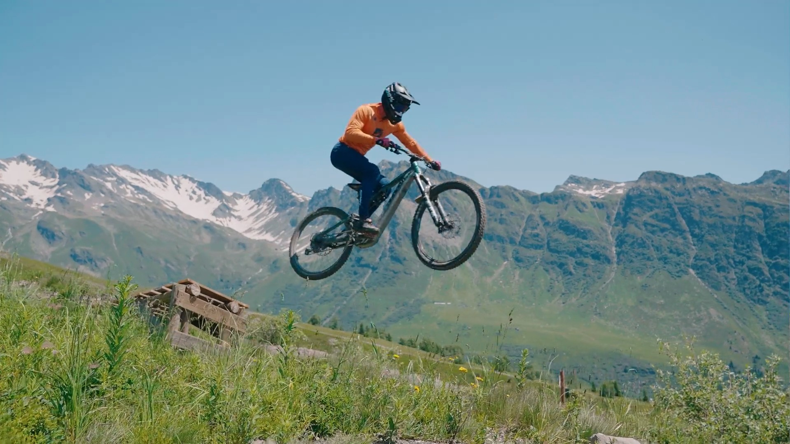

PROJETS
PROJET SUIVANT
PROJETS
PROJET SUIVANT
LA ROSIERE04
Film de marque employeur pour la station de ski La Rosière.
Réalisé en équipe de quatre, ce projet est le fruit d'une collaboration transversale où chacun est intervenu sur l'ensemble de la chaîne de post-production, du montage à l'étalonnage.





antoine-riou.github.io | © 2020-2026 Tous droits réservés.